Three products, one letter A.
Alpha-AI is building Todo-Task, Agent-Roster and TodoApp. All three are in alpha and still in development.
Explore the productsAll three at a glance, in eighteen seconds.
A short silent video with on-screen captions. It plays by itself only while it is in view, and never if you have reduced motion turned on. The button below lets you play or pause at any time.
18-second video: the letter A assembles from its shards, then hops into the three product names with a line about each: Todo-Task (tasks, calendar and mail on your own machine), Agent-Roster (a small team of AI agents that report back to you) and TodoApp (both on iPhone). All three are in alpha.
Look at their names.
-
A local task board for Jira-style work.
-
A small team of AI agents running locally.
-
The companion iPhone app.
Every name carries the A of Alpha-AI.
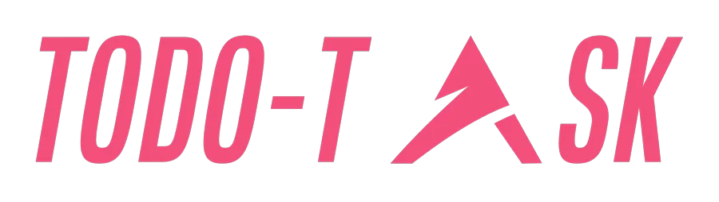
A Jira-style task board that runs on your own machine.
Todo-Task brings your work into one local dashboard, with local projects that have To do, Doing and Done boards.
Every screenshot in this chapter uses sample data. Images are cropped for small screens.
27-second video, sample data: Overview, the Board, a task drawer with a checklist, a quick look at Mail, Habits and the Launch plan board, then the Agents screen.
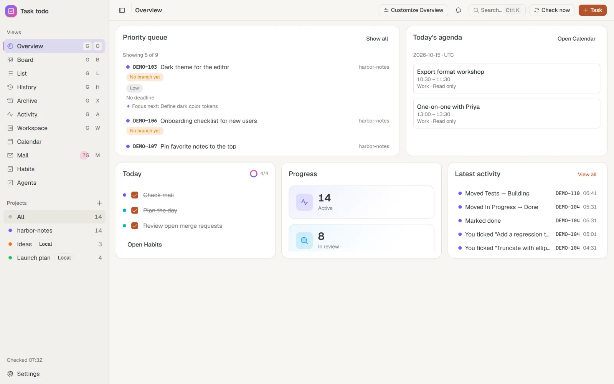
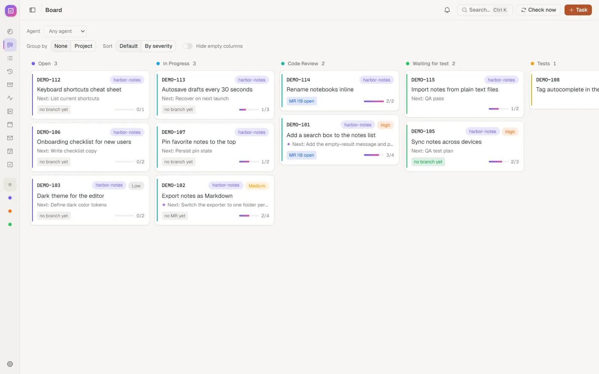
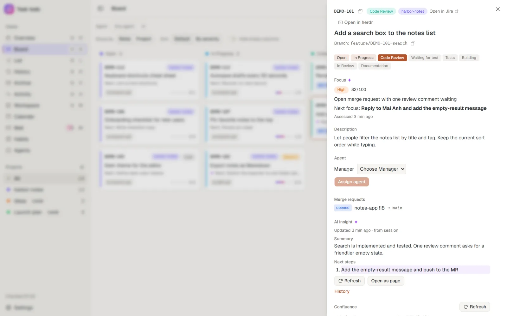
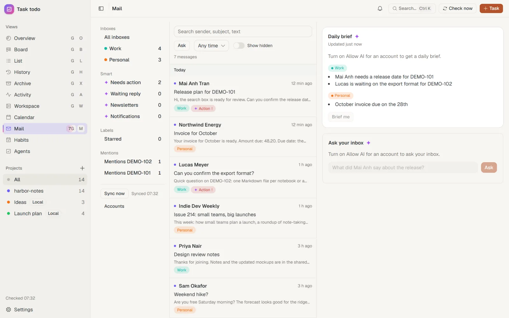
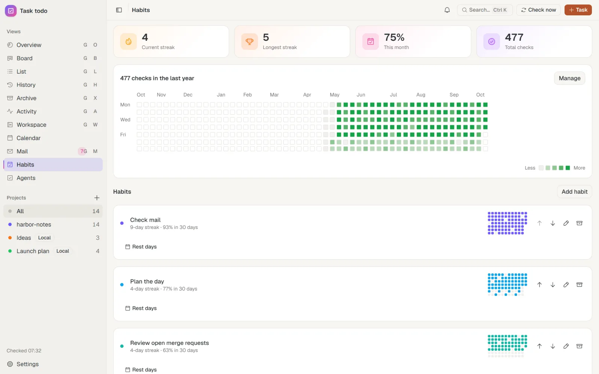
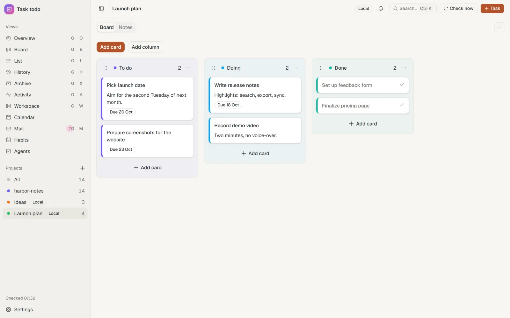
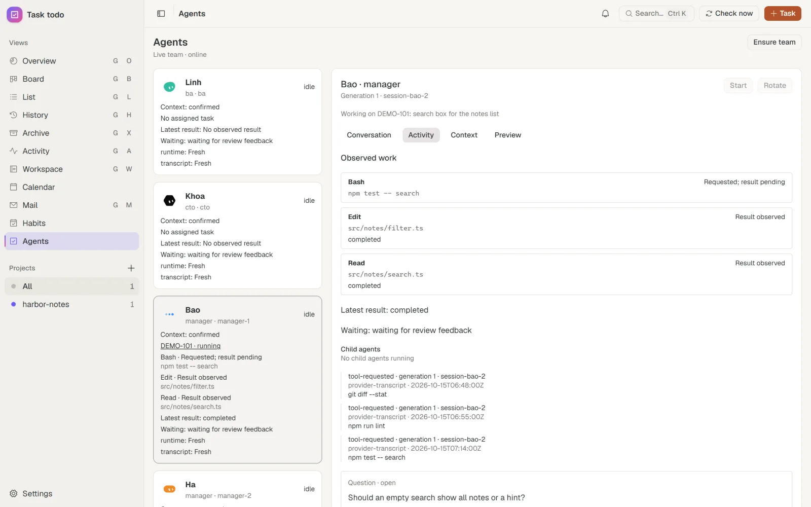
Jira and Confluence are accessed read-only.
- Overview
- Board
- List
- History
- Activity
- Calendar
- Habits
- Agents
A small team of AI agents, working right in your terminal.
Agent-Roster is made up of a BA, a CTO and Managers. They run locally in terminal panes, take assignments, ask each other questions under set rules, and report back.
- One local server is the only place agent state is written.
- Guardrails block risky file and git operations.
- An analyst agent flags work that is blocked.
- Listens on loopback only.
26-second video, sample data: the whole team and the "Needs you" list, assigning work then reviewing and confirming it, chatting with an agent, an activity preview, and the settings you control.
Screenshots of the real interface with sample data, at a narrow screen size. The rounded frames are illustrative only, not a specific device.
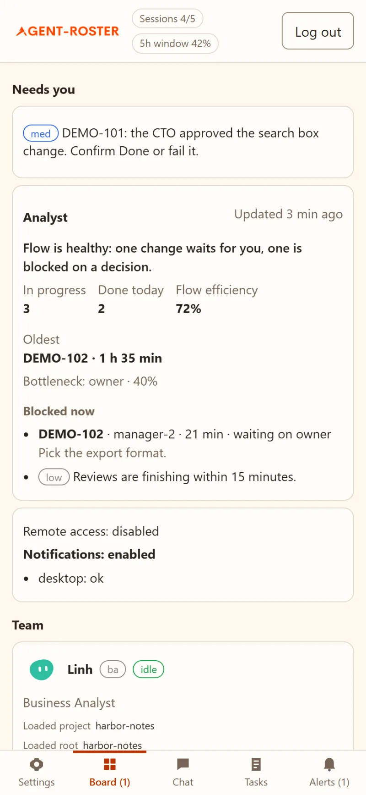
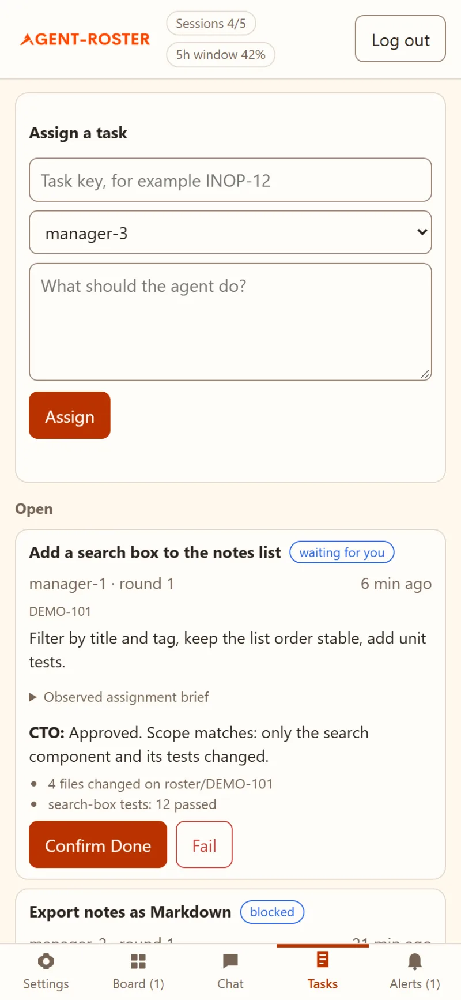
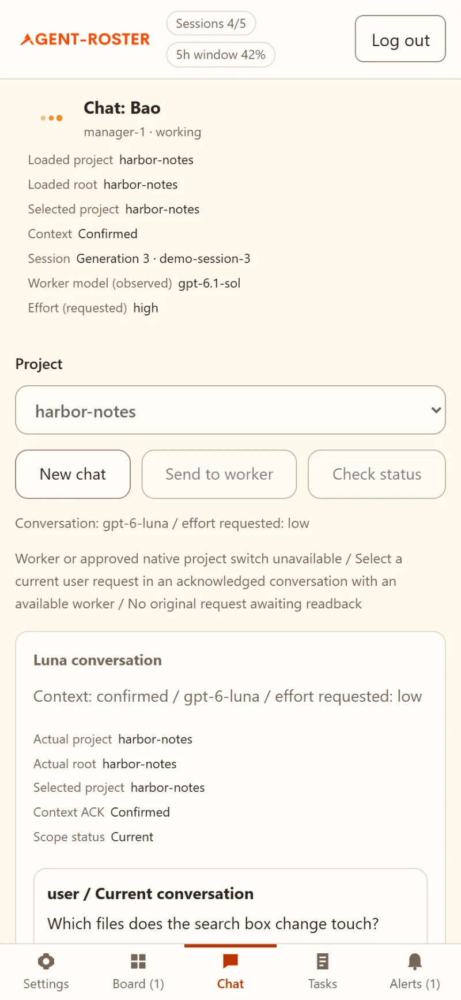
See what an agent is doing.
Agent details shows an agent's current task, confirmed context, activity history and a preview of its current session.
Screenshot of the real interface with sample data.
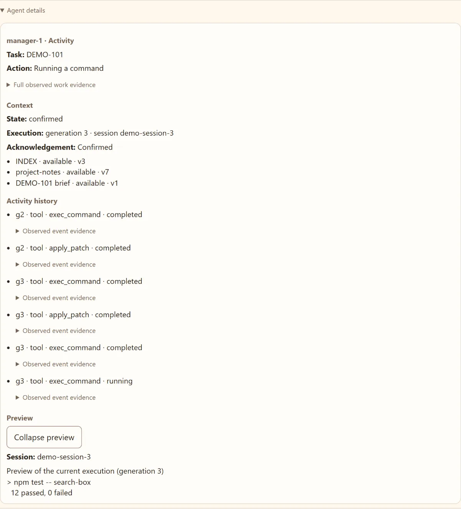
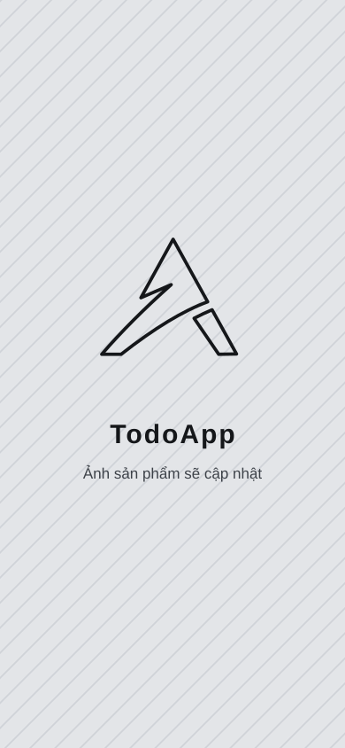
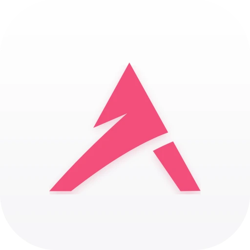
TodoApp: Todo-Task and Agent-Roster, on your iPhone.
TodoApp is the companion SwiftUI app. It mirrors the other two products on your phone and shows conversations between agents as chat.
- Commands sent back to your machine are limited to an allow-list, through a local bridge.
- Sign-in is required, with a single account.
The icon above is the real TodoApp icon on iPhone. App screenshots are still pending and will be added.
How the three products fit together.
Todo-Task
Where the work is managed.
Agent-Roster
Agents take work from Todo-Task.
TodoApp
Mirrors both on iPhone.
assigns work
mirrors
mirrors, chat view of conversations
Runs locally on your machine
The two desktop products run locally. The phone app syncs over a separate authenticated channel.
Three products, in development.
Todo-Task, Agent-Roster and TodoApp are all in alpha. The two desktop products run locally; the phone app syncs over a separate authenticated channel.
Look through each product again: Explore the products.